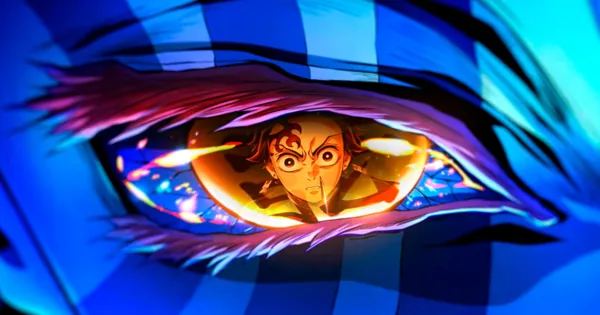

📋 Informações
Diretor: Haruo Sotozaki
Ano: 2024
Gênero: Ação, Aventura, Fantasia Sombria
🎬 Minha Review
"Kimetsu no Yaiba: Castelo do Infinito" é uma experiência cinematográfica arrebatadora. A Ufotable elevou ainda mais o padrão de animação que já era impecável, entregando sequências de ação de tirar o fôlego, especialmente no combate contra a lua superior e a tensão constante dentro do labirinto do castelo. O filme mergulha fundo na psicologia dos personagens, mostrando o desespero e a determinação dos caçadores enquanto enfrentam as ameaças mais perigosas de suas vidas. A trilha sonora de Yuki Kajiura e Go Shiina complementa perfeitamente a atmosfera opressiva e épica. É um filme que prende do início ao fim, deixando o espectador ansioso pela conclusão. Um marco para o anime e imperdível para qualquer fã.
🤸 Review do Colega
Esta área deverá ser preenchida pelo segundo aluno após fazer o clone do repositório, editar esta seção e realizar um novo commit e push.
🏅 Nota do Colega
💬 Opinião
O colega escreverá aqui sua review do mesmo filme.